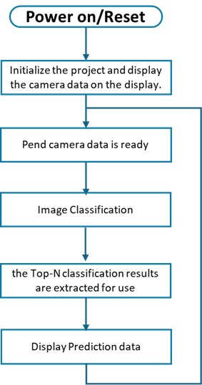

Introduction
This demo showcases an image classification application using MobileNet_v1 on the Renesas RA8P1 MCU with Arm Ethos-U55 support. It leverages the RUHMI Framework for efficient model deployment. Real-time inference is performed on camera input, and the top-5 classification results are displayed on an LCD, demonstrating low-power, high-performance edge AI capabilities.
Overview
This demo performs real-time image classification on captured frames, using a MobileNet V1 model trained on the ImageNet dataset (1000 classes). The top-5 predicted classes with associated probabilities are displayed on the screen.
| No | Content | Description |
|---|---|---|
| 1 | AI Model | mobilenetv1 |
| 2 | Inference time | Displays inference time in milliseconds |
| 3 | TOP 5 accuracy | The Top-5 predicted class labels along with their confidence scores on the screen |
 
---
## Hardware Setup
- **Board**: Renesas EK-RA8P1
- **Camera & Display**: Integrated into the EK-RA8P1 kit
- **NPU**: On-chip **Arm Ethos-U** (no external setup required)
- **Connection to PC**: Power on the EK-RA8P1 Kit with any of the USB connectors that are available.
- **Switch Setting**: Ensure **SW4** (center switch block) is set to all **0** (OFF)
> (See right image above for reference)
---
## Software Setup
- **IDE**: e² studio **2025-04.1**
- **Flexible Software Package (FSP)**: **6.0.0** (default installed)
- **mera inference framework**: Included in this repository
- **Model**: MobileNet V1 (quantized, 1000-class output)
No external dependencies are needed beyond what’s bundled in this repo and FSP.
---
## How to Compile and Flash
1. **Install e² studio 2025-04.1**
2. **Connect your EK-RA8P1 board** via USB Type-C
3. **Download this repository and extract**
3. **Open e² studio** and import this project: `File` -> `Import` -> `Existing Projects into Workspace`
4. **Generate drivers**: Double click `configuration.xml` -> `Generate Project Content`
5. **Build the Project**:
- `Right click the project name in left side bar` -> `Build Project`
6. **Flash to Board**:
- `Right click the project name in left side bar` -> `Debug As` -> `Renesas GDB Hardware Debugging`.
7. **Run the binary**
- Click `Resume` button several times
---
## Key Source Code
Main AI inference logic is in:
` (from line 99)
`
### Code Explanation:
copy_data_to_mera((int8_t*)mera_input_ptr(), (uint8_t*)model_buffer_int8, (uint32_t)mera_input_size());
volatile uint32_t old_counter = TimeCounter_CurrentCountGet();
mera_invoke();
volatile uint32_t new_counter = TimeCounter_CurrentCountGet();
volatile uint32_t diff = new_counter - old_counter;
application_processing_time.ai_inference_time_ms = TimeCounter_CountValueConvertToMs(old_counter, new_counter);
int8_t* output = (int8_t*)mera_output1_ptr();